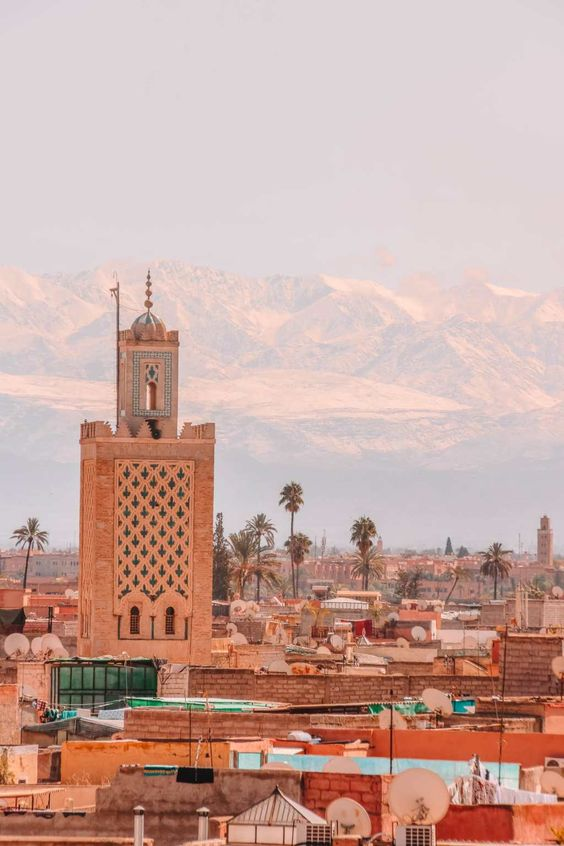

Marrakech est située au pied des montagnes de l'Atlas. Si elle est incontestablement la capitale touristique du royaume, elle n'est que la 4ème plus grande ville du pays, après Casablanca, Rabat et Fès.Dans sa configuration actuelle, la ville est divisée en deux parties distinctes :
La Médina, entourée de hautes murailles sur près de 10 kilomètres, est le centre historique de Marrakech. On y séjourne dans de magnifiques maisons traditionnelles transformées en hôtels ou en maisons d'hôtes.C'est dans la médina qu'on trouve les souks si appréciés des touristes ainsi que la place Jemaa El Fna qui porte l'image internationale de Marrakech. Ses ruelles entremêlées tel un labyrinthe et les milliers d'échoppes font le bonheur et le dépaysement des visiteurs. Symbole de la ville, le minaret de la mosquée de la Koutoubia datant du XIIe siècle est visible à des kilomètres. Mais la Médina, est bien davantage qu'une zone touristique. Une part importante de la population continue d'y vivre.

La mosquée de Koutoubia s'organise sur un plan en « T ». Cette tradition existe depuis la construction de la Grande Mosquée de Kairouan au ixe siècle, et se retrouve également en Espagne. Il s'agit en fait d'un plan arabe hypostyle23, c'est-à-dire comportant une grande cour entourée d'un portique et une salle de prière à colonnes. Les nefs sont perpendiculaires au mur de qibla, celle du centre étant plus large ; et la travée qui longe le mur qibli est également magnifiée, ce qui forme un T, d'où le nom. Le mihrab est traité comme une niche très profonde, et le minaret, haut de 77 m, est de section carrée, selon la tradition de l'occident musulman.
La dynastie almohade patronnait une architecture assez austère, reflétant un certain ascétisme. La mosquée Koutoubia ne fait pas exception : sa sobriété se remarque par son dépouillement. Les arcs employés peuvent être outrepassés ou polylobés, mais restent nu.